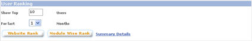
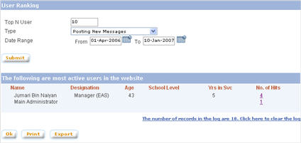
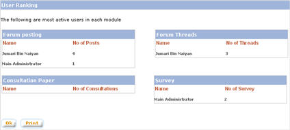
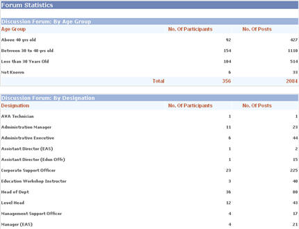

|
User Ranking
From the User Ranking module, most active users on a certain period of time can be observed.
Click on the "User Ranking" button from the left panel of the admin main page to open the "User Ranking" page.

1. Website Ranking
Website ranking observes the most active users on overall website activities, including total number of postings, consultation paper, and survey.
a. On the "User Ranking" page.
Click on "Website Rank" button.
b. Enter the number of users
to be displayed, the type of ranking, and the date range. Click
on "Submit" button. System will displayed user ranking on the selected
ranking type for the given date range.

2. Module Ranking
Module ranking observes the most active users in each module of the website: number of postings, threads created, consultation paper, and survey.
a. On the "User Ranking" page, enter the number of users and period. Click on "Module Wide Ranking" button.
b. The "Module Ranking" page will show the list of most active users in each module for the period of time.

3. Summary Details
Summary details displays demographic
statistic of Discussion Forum, Consultation Paper, and Survey categorized
by age group, designation, and school level.
a. On the "User
Ranking" page, click on the "Summary Details" link.
b. The "Summary Details" page will
display statistics for Discussion Forum, Consultation Paper, and
Survey.

|